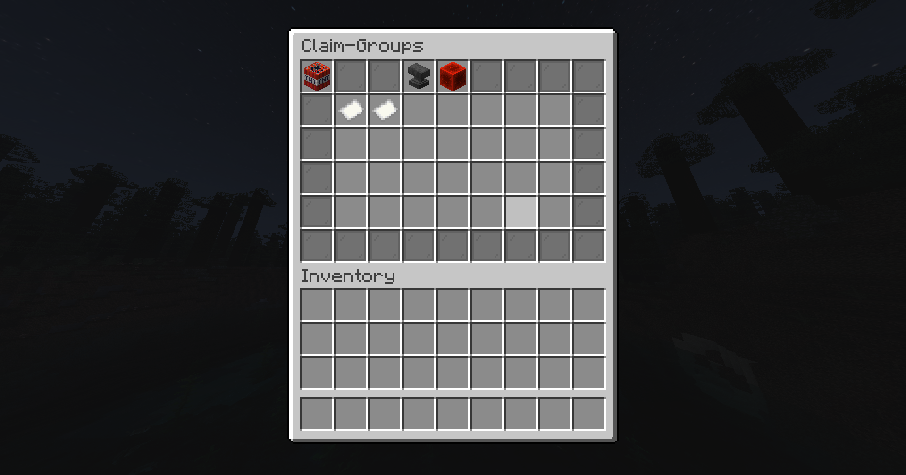

/flan Command Guide
Flan: Allow other players to access your plot
The /flan command allows players to claim and manage plots. This guide will walk you through sharing plots.
Step 1: Adding a player.
You can allow friends to access your plot by granting them trust. Use the /flan menu command. This lets trusted players build or modify your land safely. Once open click Edit Permissiongroups

Step 2
As you can see in the image below, you can either make a player a Visitor or a CoOwner.
Step 3
Click either the paper named Visitor or CoOwner. Click either one to add a player, At the top of the menu, you will see a anvil. Once you click the anvil it will add a player into that category. Type in the players name and grab the book out of the anvil. This will create the user.